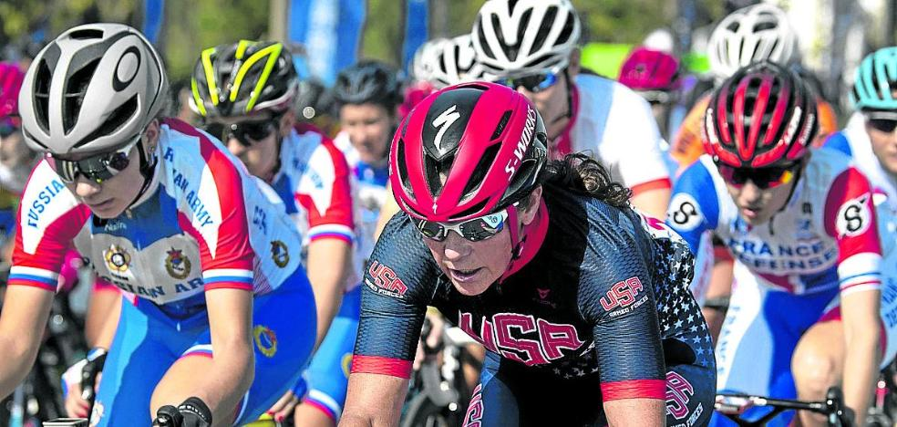
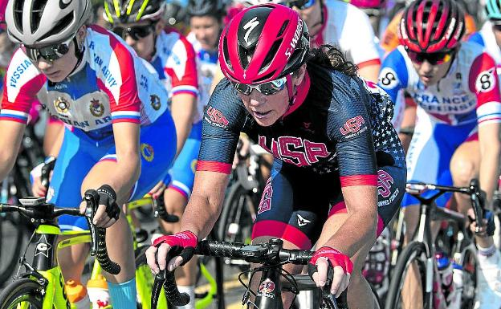
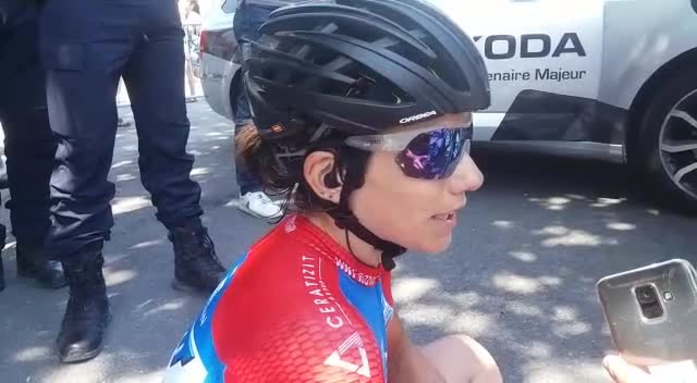
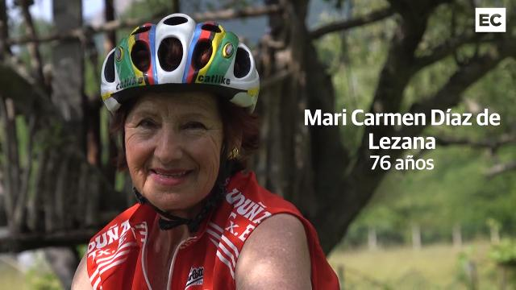

La pesadilla de ser el paciente cero

El mundo busca al paciente cero, al primer contagiado por el coronavirus.Parece, en principio, una misión loable.Trata de encontrar el origen de la pandemia para evitar otras crisis futuras.Pero, ¿qué le pasará al individuo que cargue con esa etiqueta?¿Será estigmatizado?A esa pregunta puede contestar ya la estadounidense Maatje Benassi.Participó en octubre en los Juegos Mundiales Militares, en Wuhan, foco de la infección.En su ciudad ha sido acusada de ser eso, la paciente cero, la que extendió el virus entre sus vecinos tras volver de China.Y en el país asiático, como réplica, han difundido el mensaje de que fue ella, miembro del ejército americano, quien llevó el Covid-19 a Wuhan dentro de un supuesto ataque bacteriológico.Desde hace unos meses, la vida de Benassi se resume así: «Una pesadilla».
Mientras la ciencia avanza a tientas en la lucha contra el virus, surgen teorías de la conspiración.Estados Unidos acusa a China de provocar la pandemia.El Gobierno chino contraataca y asegura que todo surgió en un laboratorio americano.Antes de que saltara la alarma sanitaria mundial se celebraron en Wuhan, en octubre del pasado año, los Juegos Militares Mundiales.Más de diez mil atletas, incluidos españoles, compartieron villa de residencia e instalaciones.Algunos de los participantes, como la francesa Elodie Clouvel, cayeron enfermos.Pensaron que era una gripe rara, intensa, con síntomas diferentes.Entonces no se hablaba aún del coronavirus.Ahora, Clouvel cree que fue el Covid-19 el causante.Eso cuadra con el descubrimiento en Francia de que la enfermedad ya estaba en el país a finales de 2019.
«Esto tiene que parar.Cualquiera que haya perdido a un ser querido puede pensar que yo soy la responsable», lamentó
Que esos Juegos fueran el foco de expansión de la pandemia está por demostrar.Aun así, un conocido ‘youtuber’ estadounidense, George Webb, alimentó la teoría de la conspiración.La explicó en la CNN.Dijo que tenía datos sobre la creación del virus en un laboratorio americano.Y que fue introducido en China con la delegación estadounidense que participó en los Juegos de Wuhan.Webb se fijó en Maatje Benassi, militar en la reserva de 52 años, porque sufrió una caída durante la prueba de ciclismo femenino.La corredora se levantó con dificultades respiratorias.Síntoma, según él, del contagio.Webb defendió esa teoría ante las cámaras.Tiene cien mil abonados en su portal digital y a eso se sumó el eco global de la CNN.«Nunca he dado positivo por coronavirus», se defendió Benassi.
Pero ya estaba clavada en la cruz.Las autoridades chinas se hicieron eco de la declaraciones de Webb y cargaron contra la deportista.Para China, la ciclista actuó como un arma biológica.Para sus vecinos en Virginia, Benassi era la paciente cero, la embajadora de la peste.Empezaron las amenazas de muerte, las cartas en la puerta de casa, la angustia... «Necesito que esto pare.Cualquiera que haya perdido a un ser querido por esta enfermedad puede pensar que yo soy la responsable y venir a mi casa», se quejó la corredora.Su nombre ya está ligado al Covid-19 en las redes.
Webb ha dado ahora marcha atrás.«Retiro la información de que Benassi dio positivo en un test.Me habían informado mal», señaló antes de cerrar su cuenta en Twitter.Pero queda la pesadilla para la ciclista.El estigma de ser la paciente cero.
Posted On: 2020-05-13T21:44:00



Content Date: 2020-05-13
Download Date: 2021-04-21
Document ID: L0C04AP00